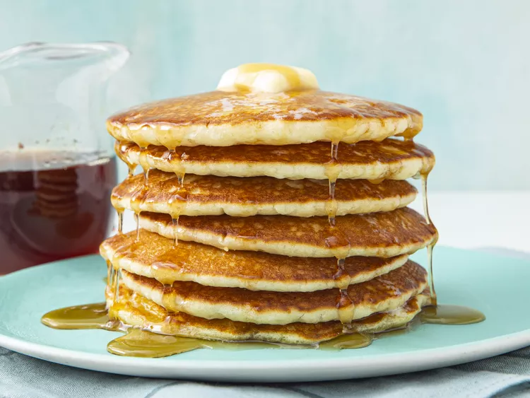

Buttermilk Pancakes

Buttermilk Pancakes
Easy to make Buttermilk Pancakes
Ingredients
- Flour
- Sugar
- Leaveners
- Salt
- Buttermilk
- Milk
- Eggs
- Buttermilk
-
Combine flour,sugar, baking powder, baking soda, and salt in a large bowl
-
Beat the buttermilk, milk, eggs, and melted butter together in a seperate bowl.
Do not combine the wet and dry ingredients until right before you cook the pancakes.
- Add the wet ingredients to the dry ingredients and mix with a wooden spoon or fork until
the mixtures are just blended. Scoop the batter onto a hot.oil griddle and cook until the pancake is bubbly on the top. Flip with a spatula and cook until
both sides are brown.